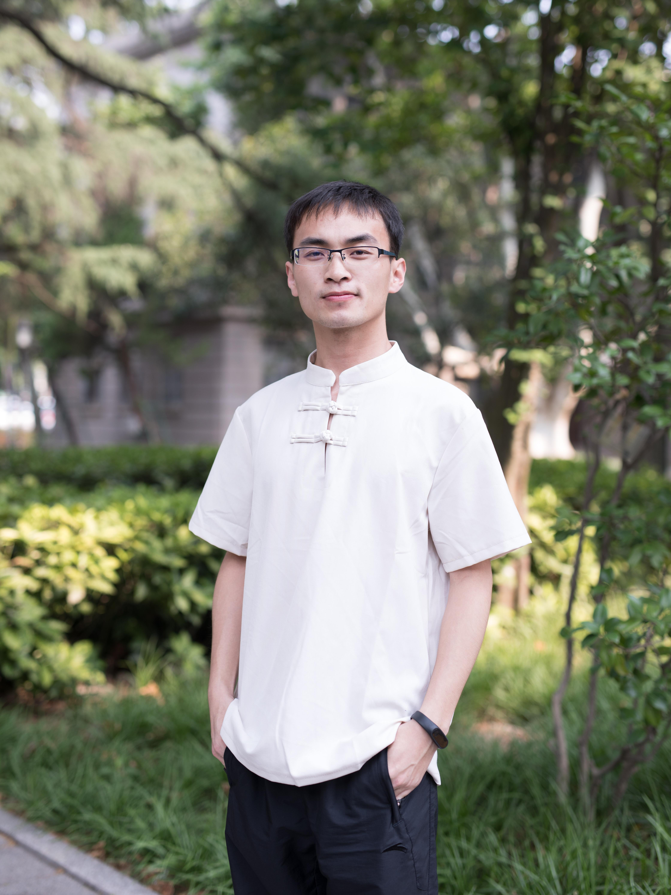
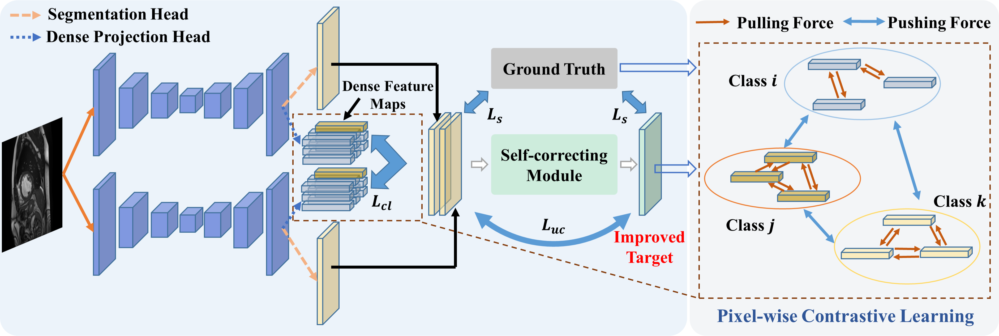
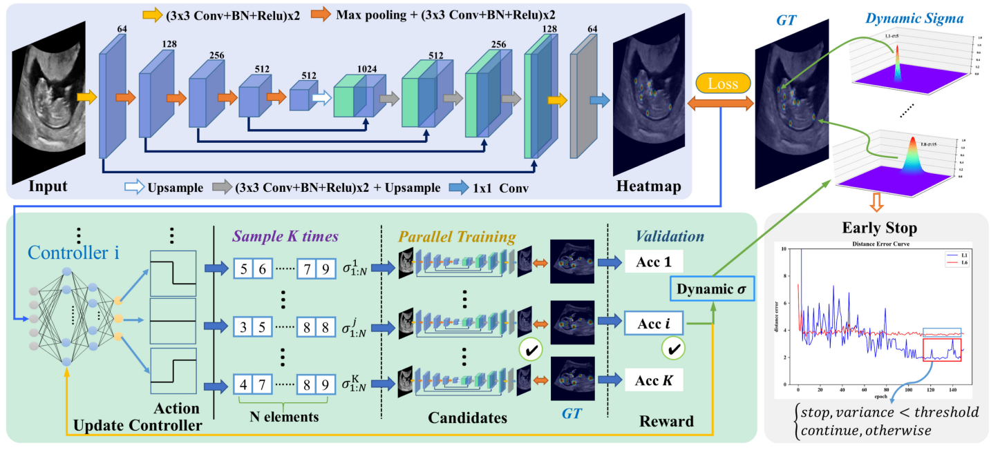
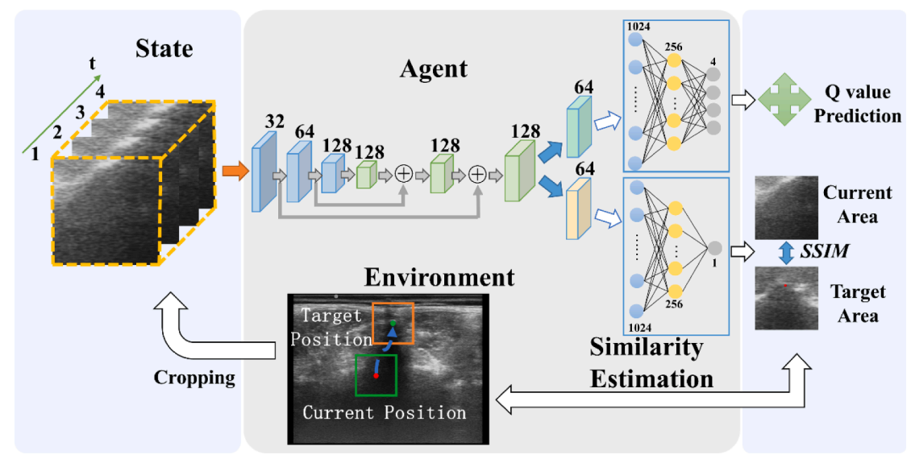
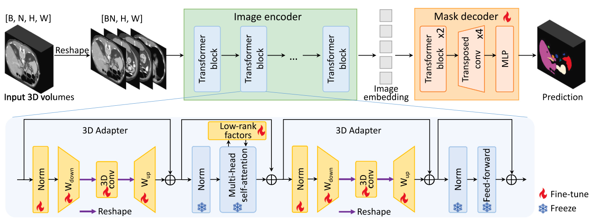
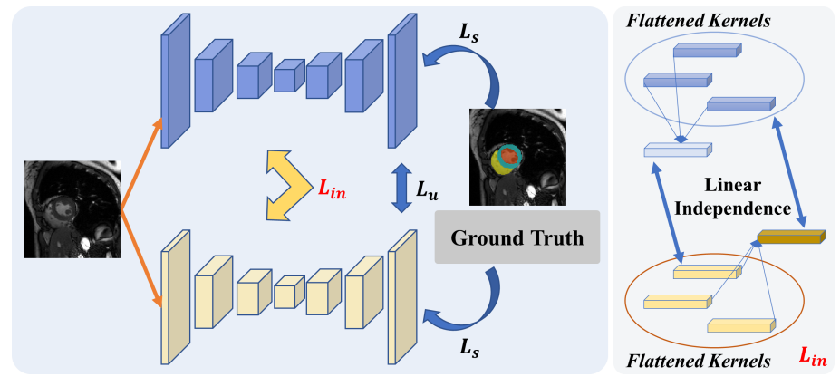
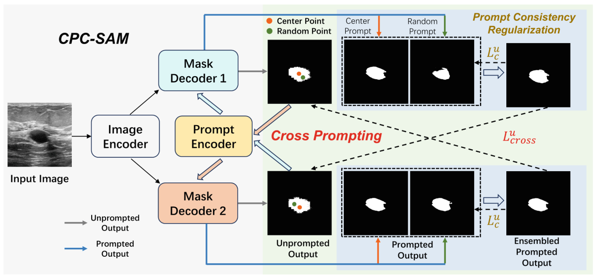
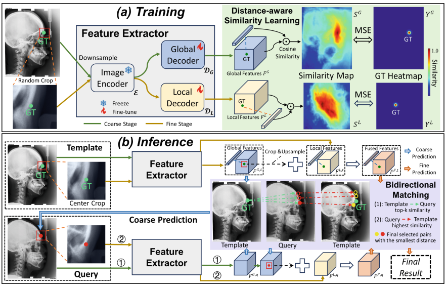
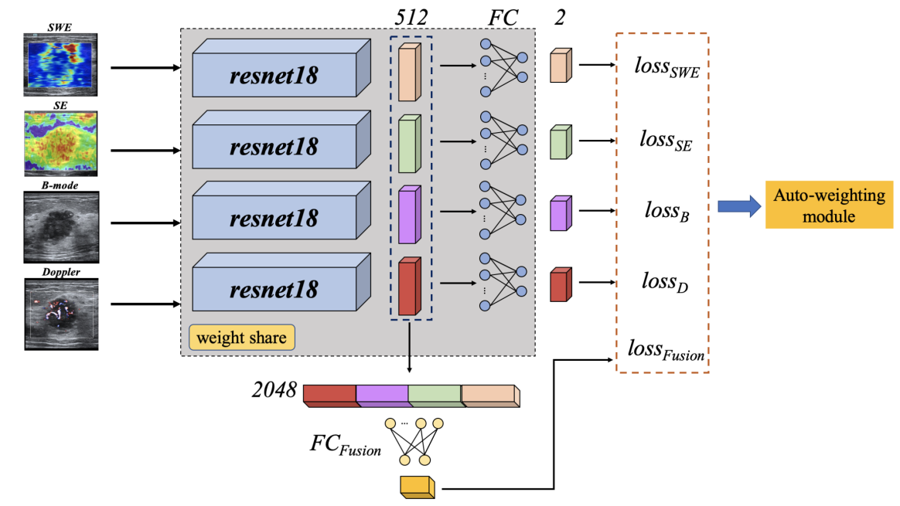

|
Juzheng MIAO 缪居正
Ph.D. Candidate
Department of Computer Science and Engineering,
The Chinese University of Hong Kong,
Shatin, Hong Kong.
Email: juzhengmiao@gmail.com
Email |
Google Scholar |
Github |
自信人生二百年，会当水击三千里。
I shall brave the waves for a thousand miles no matter how old I am.
|

|
About Me
I am a third-year Ph.D. candidate in the Department of Computer Science and Engineering, The Chinese University of Hong Kong,
supervised by Prof. Pheng-Ann Heng and Prof. Cheng Chen.
Previously, I received my M.S. and B.S. from Southeast University, both with a specialization in biomedical engineering, advised by Prof. Guang-Quan Zhou.
My Ph.D. study is supported by the Huawei Ph.D. Fellowship Program and I was an research intern at Huawei Noah's Ark Lab for 9 months.
Research Highlights
My research interests lie in the intersection of artificial intelligence and healthcare.
My current research highlights the following perspectives:
Label-efficient learning for AI models to obtain reasonable performance with very limited labeled data.
Reinforcement learning for automatic hyper-parameter searching.
Foundation models for specific medical image analysis applications, including multi-modal learning.
Computing acceleration for 3D reconstruction and customized network operators using CUDA programming.
Welcome all research collaboration, please don't hesitate to drop me emails if interested.
Feel free to contact me through my email or WeChat if you have any job recommendations or discuss any interesting topics/questions related to AI techniques.
News
[03/2025] Finish the exciting internship in Huawei Noah's Ark Lab.
[03/2025] One paper on autonomous robotic longitudinal and transverse scans for lung ultrasound automation is accepted by IEEE Transactions on Medical Robotics and Bionics.
[08/2024] Our paper on modality-agnostic SAM adaptation is accepted by Medical Image Analysis Special Issue.
[06/2024] One paper on causality-inspired domain generalization framework for fundus-based diabetic retinopathy grading is accepted by Computers in Biology and Medicine.
[05/2024] Two papers are accepted by MICCAI 2024 (both first author and early accept).
[04/2024] Pass the Ph.D. Qualification Examination.
[11/2023] Our paper on contrastive-learning based semi-supervised medical image segmentation is accepted by IEEE TMI.
[08/2023] One paper on adaptive frequency learning for colon diseases subtypes classification is accepted by IEEE JBHI.
[07/2023] Our paper on reinforcement-learning-based spinous process localization is accepted by Ultrasonics.
[07/2023] Our paper on causality-inspired semi-supervised learning (CauSSL) is accepted by ICCV 2023.
[09/2022] One paper on frequency learning for colon disease classification is accepted by MICCAI 2022.
[09/2022] One paper on fine-grained correlation loss for regression is accepted by MICCAI 2022.
[08/2022] I start my journey in the Chinese University of Hong Kong.
[06/2022] I graduate from the School of Biological Science and Medical Engineering in Southeast University and receive Master degree.
[04/2022] One paper on an auto-weighted supervision attention network with reinforcement learning is accepted by Medical Image Analysis.
[08/2021] One paper on an auto-weighting and recovery framework for breast cancer diagnosis is accepted by Medical Image Analysis.
[07/2021] Our JBHI paper is selected as a featured article.
[05/2021] One paper on a dual disentanglement network for brain tumor segmentation with missing modalities is accepted by IEEE TMI.
[05/2021] Our paper on reinforcement-learning-based fine-grained adaptive loss for multiple anatomical landmark detection in medical images is accepted by IEEE Journal of Biomedical and Health Informatics.
[07/2020] Our paper on a reinforcement-learning-based auto-weighting framework for breast cancer classification is accepted by MICCAI 2020.
[09/2019] I continue my journey in Southeast University for Master degree.
[06/2019] I graduate from the School of Biological Science and Medical Engineering in Southeast University and receive Bachelor degree.
A full list of publications is here.
Journal:
-
 |
SC-SSL: Self-Correcting Collaborative and Contrastive Co-Training Model for Semi-Supervised Medical Image Segmentation
Juzheng Miao, Si-Ping Zhou, Guang-Quan Zhou, Kai-Ni Wang, Meng Yang, Shoujun Zhou, Yang Chen.
IEEE Transactions on Medical Imaging (IEEE TMI), 2023. (CCF-B, Impact Factor: 10.2)
[Paper]
|
-
 |
Learn fine-grained adaptive loss for multiple anatomical landmark detection in medical images
Guang-Quan Zhou, Juzheng Miao, Xin Yang, Rui Li, En-Ze Huo, Wenlong Shi, Yuhao Huang, Jikuan Qian, Chaoyu Chen, Dong Ni.
IEEE Journal of Biomedical and Health Informatics (IEEE JBHI), 2021. (Impact Factor: 7.0, Selected as featured article, First-author: Advisor)
[Paper]
|
-
 |
Automatic 3-D spine curve measurement in freehand ultrasound via structure-aware reinforcement learning spinous process localization
Qi-Yong Ran*, Juzheng Miao*, Si-Ping Zhou, Shi-hao Hua, Si-Yuan He, Ping Zhou, Hong-Xing Wang, Yong-Ping Zheng, Guang-Quan Zhou.
Ultrasonics, 2023. (*: Equal Contributions, JCR Q1, Impact Factor: 4.2)
[Paper]
|
-
 |
Ma-sam: Modality-agnostic sam adaptation for 3d medical image segmentation
Cheng Chen, Juzheng Miao, Dufan Wu, Aoxiao Zhong, Zhiling Yan, Sekeun Kim, Jiang Hu, Zhengliang Liu, Lichao Sun, Xiang Li, Tianming Liu, Pheng-Ann Heng, Quanzheng Li.
Medical Image Analysis, 2024. (Impact Factor: 10.7)
[Paper][Code]
|
Conference:
-
 |
CauSSL: Causality-inspired Semi-supervised Learning for Medical Image Segmentation
Juzheng Miao, Cheng Chen, Furui Liu, Hao Wei, Pheng-Ann Heng.
IEEE International Conference on Computer Vision (ICCV), 2023. (CCF-A)
[Paper][Code]
|
-
 |
Cross prompting consistency with segment anything model for semi-supervised medical image segmentation
Juzheng Miao, Cheng Chen, Keli Zhang, Jie Chuai, Quanzheng Li, Pheng-Ann Heng.
International Conference on Medical Image Computing and Computer Assisted Intervention (MICCAI), 2024. (CCF-B)
[Paper][Code]
|
-
 |
FM-OSD: Foundation Model-Enabled One-Shot Detection of Anatomical Landmarks
Juzheng Miao, Cheng Chen, Keli Zhang, Jie Chuai, Quanzheng Li, Pheng-Ann Heng.
International Conference on Medical Image Computing and Computer Assisted Intervention (MICCAI), 2024. (CCF-B)
[Paper][Code]
|
-
 |
Auto-weighting for breast cancer classification in multimodal ultrasound
Jian Wang*, Juzheng Miao*, Xin Yang, Rui Li, Guangquan Zhou, Yuhao Huang, Zehui Lin, Wufeng Xue, Xiaohong Jia, Jianqiao Zhou, Ruobing Huang, Dong Ni.
International Conference on Medical Image Computing and Computer Assisted Intervention (MICCAI), 2020. (*: Equal Contributions, CCF-B)
[Paper]
|
Selected Honors and Awards
National Scholarship for Graduate Students, 2021
Outstanding Graduates of Southeast University, 2019
1st-Level Prize on National Mathematic Contest in Jiangsu for Undergraduate Students, 2017
National Scholarship for Undergraduate Students, 2016
Invited Talks
Causality-inspired Semi-supervised Learning for Medical Image Segmentation
@MUSIC Lab, Shenzhen University, Shenzhen, 2023.
Professional Activities
Conference Reviewer: ICCV, MICCAI.
Journal Reviewer: TIP, TCSVT, TMI, JBHI.
Teaching
CSCI3180: Principles of Programming Languages, 2023 Spring, The Chinese University of Hong Kong.
CSCI2100: Data Structures, 2022 Fall, The Chinese University of Hong Kong.